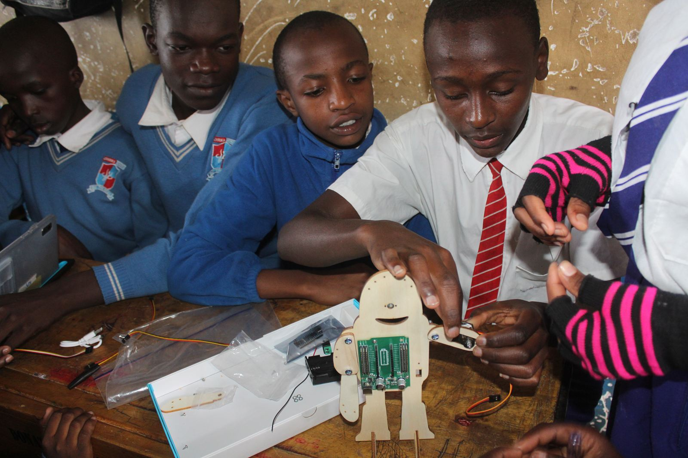

Ushirika School students explore robotics with DEAN
Pupils at Ushirika School got their first hands-on lesson in robotics, thanks to the Digital Education Africa Network (DEAN).
Read the story: Ushirika School students explore robotics with DEAN